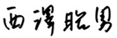

代表あいさつ


代表あいさつ
当社は創業12年目の1988年に店頭公開し、36年目の2012年に非上場企業となりました。あえてこの非上場の道を選んだ理由は二つあります。国内外に広がるビジネスチャンスに、創業の原点に立ち返り、思い切った大きなチャレンジをしたかったこと。また、その実現のために社員の中に広まってきた、いわゆる「大企業病」を払拭し、イノベーションを敢行したかったこと。
そしてこの間、当社は次の二つのミッションを掲げてきました。
①真の教育・文化立国「日本」の創出に寄与します。
②良質のコンテンツを広く配信し、
「世界」の人々に “夢” と “感動” を提供します。
①について、
当社を含めた私塾は、受験や補習の面で学校を補完するという一定の役割を果たしてきました。しかし今日の状況は、真のリーダーが育たないばかりか、やる気に欠け、基礎学力が不足している若年層の増加など、教育の混迷は深まるばかりです。もっと面白く、もっと刺激的な、もっと社会に出てから役立つ教育プログラムを、もっと安価に、生徒一人ひとりに提供できないか。キーワードは「リアルとネットの融合」「教育とゲームの融合」「教育とエンタメの融合」ではないかと考えています。
②について、
当社は2000年から10年間で３本の長編アニメ映画を製作し、世界の映画祭で高い評価を受けてきました。マンガ、アニメ、キャラクターといったいわゆるサブカルチャーが世界中で人気を博している背景があったと思われます。当社は、アニメや多様な教育系コンテンツとともに、良質の日本の文化をインターネットで世界に発信していきたいと考えています。
私たちは中長期的な視野に立ち、これら二つのミッションの実現を目指していきます。
株式会社ワオ・コーポレーション
代表取締役社長
